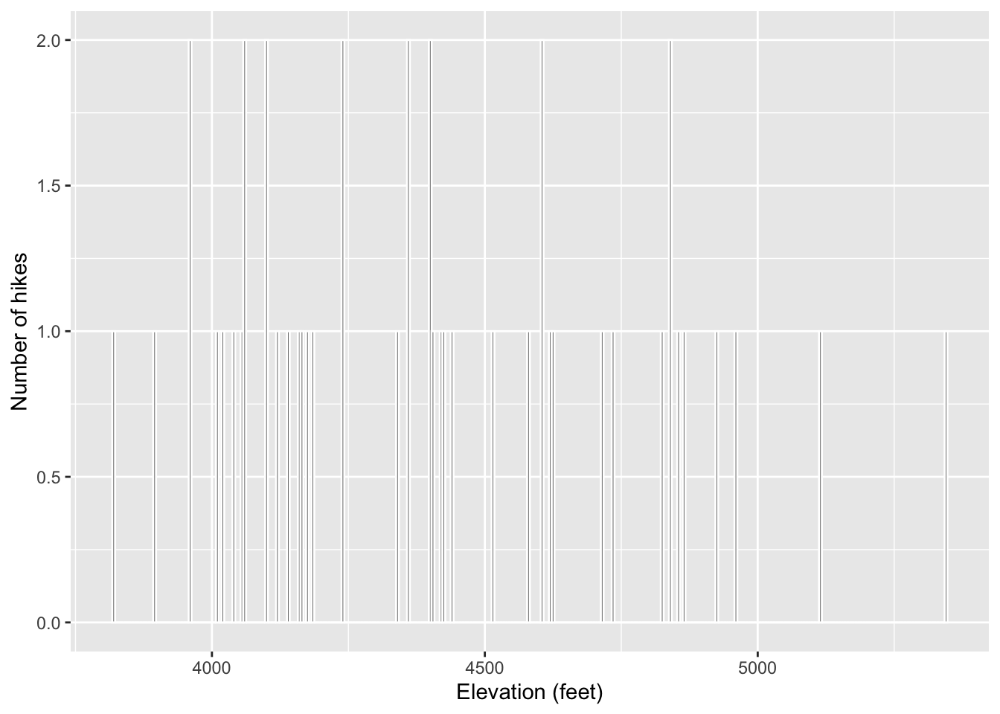

6 Univariate Viz
6.0.1 Importance of Visualizations
Exercise 1: Research Questions
Let’s dig into the hikes data, starting with the elevation and difficulty ratings of the hikes:
peak elevation difficulty ascent length time rating
1 Mt. Marcy 5344 5 3166 14.8 10.0 moderate
2 Algonquin Peak 5114 5 2936 9.6 9.0 moderate
3 Mt. Haystack 4960 7 3570 17.8 12.0 difficult
4 Mt. Skylight 4926 7 4265 17.9 15.0 difficult
5 Whiteface Mtn. 4867 4 2535 10.4 8.5 easy
6 Dix Mtn. 4857 5 2800 13.2 10.0 moderate- What features would we like a visualization of the categorical difficulty
ratingvariable to capture?
Difficulty captured in ascending order and same category difficulty captured together
b. What about a visualization of the quantitative elevation variable?
They should be arranged by difficulty or by descending order or elevation
Exercise 2: Load tidyverse
We’ll address the above questions using ggplot tools. Try running the following chunk and simply take note of the error message – this is one you’ll get a lot!
── Attaching core tidyverse packages ──────────────────────── tidyverse 2.0.0 ──
✔ dplyr 1.1.4 ✔ readr 2.1.5
✔ forcats 1.0.0 ✔ stringr 1.5.1
✔ ggplot2 3.5.1 ✔ tibble 3.2.1
✔ lubridate 1.9.4 ✔ tidyr 1.3.1
✔ purrr 1.0.2
── Conflicts ────────────────────────────────────────── tidyverse_conflicts() ──
✖ dplyr::filter() masks stats::filter()
✖ dplyr::lag() masks stats::lag()
ℹ Use the conflicted package (<http://conflicted.r-lib.org/>) to force all conflicts to become errors
In order to use ggplot tools, we have to first load the tidyverse package in which they live. We’ve installed the package but we need to tell R when we want to use it. Run the chunk below to load the library. You’ll need to do this within any .qmd file that uses ggplot().
Exercise 3: Bar Chart of Ratings - Part 1
Consider some specific research questions about the difficulty rating of the hikes:
- How many hikes fall into each category?
2 3 4 5 6 7
1 1 9 14 13 8 -
Are the hikes evenly distributed among these categories, or are some more common than others?
They are not evenly distributed
All of these questions can be answered with: (1) a bar chart; of (2) the categorical data recorded in the rating column. First, set up the plotting frame:

Think about:
- What did this do? What do you observe? Gave a chart of the dificulty ratings with nothing on it
- What, in general, is the first argument of the
ggplot()function? Descibes the data set from which the data should come from - What is the purpose of writing
x = rating? It makes rating the x axis - What do you think
aesstands for?!? Maybe aesthetics of the chart
Exercise 4: Bar Chart of Ratings - Part 2
Now let’s add a geometric layer to the frame / canvas, and start customizing the plot’s theme. To this end, try each chunk below, one by one. In each chunk, make a comment about how both the code and the corresponding plot both changed.
NOTE:
- Pay attention to the general code properties and structure, not memorization.
- Not all of these are “good” plots. We’re just exploring
ggplot.
# COMMENT on the change in the code and the corresponding change in the plot
ggplot(hikes, aes(x = rating)) +
geom_bar()
# COMMENT on the change in the code and the corresponding change in the plot
ggplot(hikes, aes(x = rating)) +
geom_bar() +
labs(x = "Rating", y = "Number of hikes")
# COMMENT on the change in the code and the corresponding change in the plot
ggplot(hikes, aes(x = rating)) +
geom_bar(fill = "blue") +
labs(x = "Rating", y = "Number of hikes")


Exercise 5: Bar Chart Follow-up
Part a
Reflect on the ggplot() code.
- What’s the purpose of the
+? When do we use it? To add a function to an already existing argument - We added the bars using
geom_bar()? Why “geom”? It makes the height of the bar proportional to the number of casings at the bottom - What does
labs()stand for? # Labels - What’s the difference between
colorandfill? Color makes the border while Fill makes the color of the bar inside
Part b
In general, bar charts allow us to examine the following properties of a categorical variable:
- observed categories: What categories did we observe? Difficult, moderate and easy
- variability between categories: Are observations evenly spread out among the categories, or are some categories more common than others? Some are more common that others
We must then translate this information into the context of our analysis, here hikes in the Adirondacks. Summarize below what you learned from the bar chart, in context.
There are some hikes that are more common than others based on the rating of the difficulty.
Part c
Is there anything you don’t like about this barplot? For example: check out the x-axis again.
Moderate should have been between easy and difficult
Exercise 6: Sad Bar Chart
Let’s now consider some research questions related to the quantitative elevation variable:
- Among the hikes, what’s the range of elevation and how are the hikes distributed within this range (e.g. evenly, in clumps, “normally”)?
- What’s a typical elevation?
- Are there any outliers, i.e. hikes that have unusually high or low elevations?
Here:
- Construct a bar chart of the quantitative
elevationvariable. - Explain why this might not be an effective visualization for this and other quantitative variables. (What questions does / doesn’t it help answer?)
Exercise 7: A Histogram of Elevation
Quantitative variables require different viz than categorical variables. Especially when there are many possible outcomes of the quantitative variable. It’s typically insufficient to simply count up the number of times we’ve observed a particular outcome as the bar graph did above. It gives us a sense of ranges and typical outcomes, but not a good sense of how the observations are distributed across this range. We’ll explore two methods for graphing quantitative variables: histograms and density plots.
Histograms are constructed by (1) dividing up the observed range of the variable into ‘bins’ of equal width; and (2) counting up the number of cases that fall into each bin. Check out the example below:

Part a
Let’s dig into some details.
How many hikes have an elevation between 4500 and 4700 feet? 6
How many total hikes have an elevation of at least 5100 feet? 2
Part b
Now the bigger picture. In general, histograms allow us to examine the following properties of a quantitative variable:
- typical outcome: Where’s the center of the data points? What’s typical?
- variability & range: How spread out are the outcomes? What are the max and min outcomes?
- shape: How are values distributed along the observed range? Is the distribution symmetric, right-skewed, left-skewed, bi-modal, or uniform (flat)?
- outliers: Are there any outliers, i.e. outcomes that are unusually large/small?
We must then translate this information into the context of our analysis, here hikes in the Adirondacks. Addressing each of the features in the above list, summarize below what you learned from the histogram, in context.
Elevations have a range of between 3700 to 5500 and are normally distributed.
Exercise 8: Building Histograms - Part 1
2-MINUTE CHALLENGE: Thinking of the bar chart code, try to intuit what line you can tack on to the below frame of elevation to add a histogram layer. Don’t forget a +. If it doesn’t come to you within 2 minutes, no problem – all will be revealed in the next exercise.

Exercise 9: Building Histograms - Part 2
Let’s build some histograms. Try each chunk below, one by one. In each chunk, make a comment about how both the code and the corresponding plot both changed.
# COMMENT on the change in the code and the corresponding change in the plot
ggplot(hikes, aes(x = elevation)) +
geom_histogram()`stat_bin()` using `bins = 30`. Pick better value with `binwidth`.
# COMMENT on the change in the code and the corresponding change in the plot
ggplot(hikes, aes(x = elevation)) +
geom_histogram(color = "white") `stat_bin()` using `bins = 30`. Pick better value with `binwidth`.
# COMMENT on the change in the code and the corresponding change in the plot
ggplot(hikes, aes(x = elevation)) +
geom_histogram(color = "white", fill = "blue") `stat_bin()` using `bins = 30`. Pick better value with `binwidth`.
# COMMENT on the change in the code and the corresponding change in the plot
ggplot(hikes, aes(x = elevation)) +
geom_histogram(color = "white") +
labs(x = "Elevation (feet)", y = "Number of hikes")`stat_bin()` using `bins = 30`. Pick better value with `binwidth`.
# COMMENT on the change in the code and the corresponding change in the plot
ggplot(hikes, aes(x = elevation)) +
geom_histogram(color = "white", binwidth = 1000) +
labs(x = "Elevation (feet)", y = "Number of hikes")


Exercise 10: Histogram Follow-up
- What function added the histogram layer / geometry? geom_histogram()
- What’s the difference between
colorandfill? Color only covers the border while Fill covers inside the bar - Why does adding
color = "white"improve the visualization? It makes the demarcations of the bins in the histograms more visible. - What did
binwidthdo? It determines the width of the bins - Why does the histogram become ineffective if the
binwidthis too big (e.g. 1000 feet)? It does not show the differences - Why does the histogram become ineffective if the
binwidthis too small (e.g. 5 feet)? Becomes too much to digest, and might not be able to seee the pattern or bigger picture
Exercise 11: Density Plots
Density plots are essentially smooth versions of the histogram. Instead of sorting observations into discrete bins, the “density” of observations is calculated across the entire range of outcomes. The greater the number of observations, the greater the density! The density is then scaled so that the area under the density curve always equals 1 and the area under any fraction of the curve represents the fraction of cases that lie in that range.
Check out a density plot of elevation. Notice that the y-axis (density) has no contextual interpretation – it’s a relative measure. The higher the density, the more common are elevations in that range.

Questions
-
INTUITION CHECK: Before tweaking the code and thinking back to
geom_bar()andgeom_histogram(), how do you anticipate the following code will change the plot?-
geom_density(color = "blue")the line will be blue -
geom_density(fill = "orange")the area under the line will be blue
-
TRY IT! Test out those lines in the chunk below. Was your intuition correct?

- Examine the density plot. How does it compare to the histogram? What does it tell you about the typical elevation, variability / range in elevations, and shape of the distribution of elevations within this range? There is a commanality in the range of 4200 to 4800. The higher the elevation the less the commonality there is.
Exercise 12: Density Plots vs Histograms
The histogram and density plot both allow us to visualize the behavior of a quantitative variable: typical outcome, variability / range, shape, and outliers. What are the pros/cons of each? What do you like/not like about each?
Histogram: -easy for frequency countn
- good for making calculations
Density plot - good for visualization
- hard for making interpretations due to a large bandwidth
6.0.2 Exercise 13: Code = communication
We obviously won’t be done until we talk about communication. All code above has a similar general structure (where the details can change):
- Though not necessary to the code working, it’s common, good practice to indent or tab the lines of code after the first line (counterexample below). Why? # Its much easier to read
# YUCK
ggplot(hikes, aes(x = elevation)) +
geom_histogram(color = "white", binwidth = 200) +
labs(x = "Elevation (feet)", y = "Number of hikes")
- Though not necessary to the code working, it’s common, good practice to put a line break after each
+(counterexample below). Why?

Exercise 14: Practice
Part a
Practice your viz skills to learn about some of the variables in one of the following datasets from the previous class:
Part b
Check out the RStudio Data Visualization cheat sheet to learn more features of ggplot.
When done, don’t forgot to click Render Book and check the resulting HTML files. If happy, jump to GitHub Desktop and commit the changes with the message Finish activity 3 and push to GitHub. Wait few seconds, then visit your portfolio website and make sure the changes are there.
6.1 Solutions
Click for Solutions
Exercise 1: Research Questions
- For example: how many hikes are there in each category? are any categories more common than others?
- For example: What’s a typical elevation? What’s the range in elevations?
Exercise 3: Bar Chart of Ratings - Part 1

- just a blank canvas
- name of the dataset
- indicate which variable to plot on x-axis
-
aesthetics
Exercise 4: Bar Chart of Ratings - Part 2

# Add meaningful axis labels
ggplot(hikes, aes(x = rating)) +
geom_bar() +
labs(x = "Rating", y = "Number of hikes")
# FILL the bars with blue
ggplot(hikes, aes(x = rating)) +
geom_bar(fill = "blue") +
labs(x = "Rating", y = "Number of hikes")
# COLOR the outline of the bars in orange
ggplot(hikes, aes(x = rating)) +
geom_bar(color = "orange", fill = "blue") +
labs(x = "Rating", y = "Number of hikes")
# Change the theme to a white background
ggplot(hikes, aes(x = rating)) +
geom_bar(color = "orange", fill = "blue") +
labs(x = "Rating", y = "Number of hikes") +
theme_minimal()
Exercise 5: Bar Chart Follow-up
Part a
- To indicate we’re still adding layers to / modifying our plot.
- Bars are the
geometric elements we’re adding in this layer. - labels
-
fillfills in the bars.coloroutlines the bars.
Part b
Most hikes are moderate, the fewest number are difficult.
Part c
I don’t like that the categories are alphabetical, not in order of difficulty level.
Exercise 6: Sad Bar Chart
There are too many different outcomes of elevation.

Exercise 7: A Histogram of Elevation
Part a
- 6
- 1 + 1 = 2
Part b
Elevations range from roughly 3700 to 5500 feet. Elevations vary from hike to hike relatively normally (with a bell shape) around a typical elevation of roughly 4500 feet.
Exercise 9: Building Histograms - Part 2
`stat_bin()` using `bins = 30`. Pick better value with `binwidth`.
`stat_bin()` using `bins = 30`. Pick better value with `binwidth`.
# Fill the bars in blue
ggplot(hikes, aes(x = elevation)) +
geom_histogram(color = "white", fill = "blue") `stat_bin()` using `bins = 30`. Pick better value with `binwidth`.
# Add axis labels
ggplot(hikes, aes(x = elevation)) +
geom_histogram(color = "white") +
labs(x = "Elevation (feet)", y = "Number of hikes")`stat_bin()` using `bins = 30`. Pick better value with `binwidth`.
# Change the width of the bins to 1000 feet
ggplot(hikes, aes(x = elevation)) +
geom_histogram(color = "white", binwidth = 1000) +
labs(x = "Elevation (feet)", y = "Number of hikes")
# Change the width of the bins to 5 feet
ggplot(hikes, aes(x = elevation)) +
geom_histogram(color = "white", binwidth = 5) +
labs(x = "Elevation (feet)", y = "Number of hikes")
# Change the width of the bins to 200 feet
ggplot(hikes, aes(x = elevation)) +
geom_histogram(color = "white", binwidth = 200) +
labs(x = "Elevation (feet)", y = "Number of hikes")
Exercise 10: Histogram Follow-up
geom_histogram()-
coloroutlined the bars andfillfilled them - easier to distinguish between the bars
- changed the bin width
- we lump too many hikes together and lose track of the nuances
- we don’t lump enough hikes together and lose track of the bigger picture trends
Exercise 11: Density plots
Exercise 13: Code = Communication
- Clarifies that the subsequent lines are a continuation of the first. That is, we’re not done with the plot yet. These lines are all part of the same idea.
- This is like a run-on sentence. It’s tough to track the distinct steps that go into building the plot.